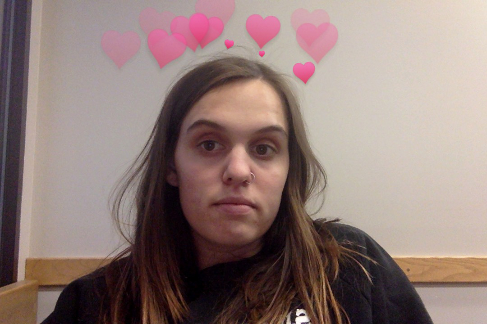

March 7, 2015 | 4:55 PM | Washington, DC
Spending finals trying to wirte a thesis paper in the library. I'm struggling and feeling a lot of emotions about leaving. Little did I know it was really the end.